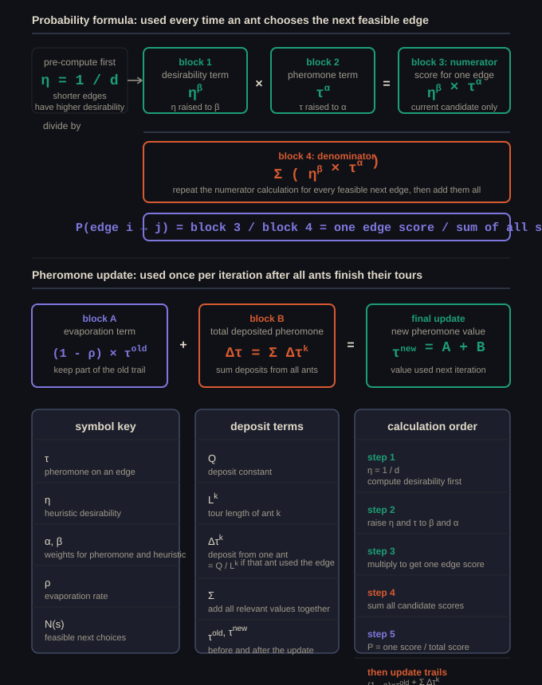

Practical View
ACO is used for constructive combinatorial optimisation. Ants build solutions step by step, and pheromone values bias future ants toward stronger components of past solutions.
Algorithm
Set initial tau_ij values and decide how many ants will be used.
At every step it chooses the next feasible component using pheromone and heuristic information.
The notes call these daemon actions.
Evaporate old pheromone and deposit new pheromone on strong solution components.
Common criteria are iteration count or time budget.
Probability Rule
The denominator just normalises the values so that all valid next-edge probabilities add up to 1.
| Symbol | Meaning |
|---|---|
tau_ij | Pheromone on edge or component (i,j) |
eta_ij | Heuristic desirability, usually 1 / distance |
alpha | Pheromone weight |
beta | Heuristic weight |
N(s) | Feasible neighbourhood from the current partial solution |
- Higher
alphameans stronger reliance on pheromone trails. - Higher
betameans stronger reliance on heuristic greediness, such as short edges. - Together they control exploration versus exploitation.
Pheromone Update
The first term keeps some memory of the old trail, while the second term adds all pheromone deposits made by ants that used that edge.
Deposit Rule
Shorter tours get a larger Q / L_k value, so better ants reinforce their edges more strongly. If an ant did not walk on the edge, it deposits nothing there.
| Parameter | Meaning |
|---|---|
rho | Evaporation rate, with 0 < rho < 1 |
Q | Pheromone scaling constant |
L_k | Length or cost of ant k's full solution |
Q / L_k is bigger when L_k is smaller.Heuristic Value
Short edges get high desirability, long edges get low desirability, and this heuristic value does not change during the run.
Formula Map
This visual ties the probability rule, deposit rule, and pheromone update together in the same order you would usually work them out by hand in a test or tutorial question.

Worked Selection Example
Suppose an ant at node A can choose AB or AC, with alpha = 1 and beta = 2.
| Path | tau | eta | Numerator |
|---|---|---|---|
| AB | 4 | 0.1 | 4^1 * 0.1^2 = 0.04 |
| AC | 2 | 0.5 | 2^1 * 0.5^2 = 0.50 |
Even though AB has more pheromone, AC is far more likely because the heuristic term is much stronger here.
Parameters You Need To Know
| Parameter | Role |
|---|---|
alpha | Pheromone weight. High alpha means ants follow existing trails more strongly, so exploitation increases. |
beta | Heuristic weight. High beta makes ants behave more greedily by preferring shorter edges more strongly. |
rho | Evaporation rate, between 0 and 1. High rho means pheromone fades faster, so the colony has less memory and explores more. |
Q | Pheromone constant. Larger Q means more pheromone is deposited per tour. |
tau | Pheromone level on an edge. It is updated every iteration and usually starts equal on all edges at some initial tau_0. |
eta | Heuristic desirability, usually 1 / distance. It is fixed and never updated. |
m | Number of ants. Often chosen equal to the number of cities. |
| Local search strategy | Optional post-processing step for complete solutions |
| Termination criterion | Maximum iterations, time, or convergence threshold |
Tutorial-Style Route Choice Example
Suppose an ant is at Node 1 and may move to Node 2, Node 3, or Node 4. Let alpha = 1, beta = 2, and eta_ij = 1 / C_ij.
| Path | Cost | Pheromone | Heuristic | Numerator |
|---|---|---|---|---|
| 1 -> 2 | 2 | 4 | 0.5 | 4 * 0.5^2 = 1.0 |
| 1 -> 3 | 5 | 10 | 0.2 | 10 * 0.2^2 = 0.4 |
| 1 -> 4 | 1 | 1 | 1.0 | 1 * 1.0^2 = 1.0 |
This is a good example of ACO balancing two signals at once: path 1 -> 3 has the most pheromone, but its cost is worse, so it does not dominate.
What The Algorithm Is Really Doing
Important ACO Variants
In exams, basic ACO is often treated as Ant System (AS). Later variants mainly change how pheromone is updated so that convergence is faster and stagnation is reduced.
| Variant | Main Idea | What Changes |
|---|---|---|
AS | The original ant system | All ants construct solutions and all ants contribute to the global pheromone update. |
MMAS | Stronger control of pheromone values | Usually only the best ant deposits pheromone, and every trail is clipped to a minimum and maximum bound. |
ACS | More aggressive exploitation with extra diversification | Uses a stronger decision rule, a local pheromone update during construction, and a global update usually based on the best solution. |
AS: everyone deposits.MMAS: best deposits, bounded trails.ACS: smarter choice rule plus local updates.
AS: Ant System
Ant System is the classical form of ACO. Each ant builds a full solution using the standard probability rule, and after the iteration all ants may deposit pheromone on the components they used.
This is the most direct version to write if a question simply asks for the basic ACO pheromone model.
MMAS: MAX-MIN Ant System
MAX-MIN Ant System was designed to reduce premature stagnation. Instead of letting pheromone values grow without much control, each trail is kept inside fixed bounds.
MMAS commonly allows only the best ant to reinforce the trails, often the best-so-far ant or the best ant in the current iteration.
ACS: Ant Colony System
Ant Colony System adds two important ideas: a more exploitative state transition rule, and a local pheromone update that happens immediately when an ant traverses an edge.
The local update makes recently used edges slightly less attractive to following ants in the same iteration, which encourages them to spread out more.
q_0, otherwise it uses the normal probabilistic rule.
After all ants finish, ACS still performs a global update, usually reinforcing only the best tour.
How To Compare Them In An Answer
| If asked... | What to say |
|---|---|
| Which one is the basic form? | AS is the original baseline ACO variant. |
| Which one controls stagnation with explicit pheromone bounds? | MMAS, because it enforces tau_min and tau_max. |
| Which one uses local pheromone updates during construction? | ACS. |
| Which variants usually let only the best ant reinforce strongly? | MMAS and commonly ACS. |
Interactive Demo: ACO Probability Calculation
Use this visual when you want to see the probability rule expanded step by step from distances and equal starting pheromone values to the final normalised next-city probabilities.
Interactive Demo: Full ACO Worked Example
This walkthrough ties the whole process together: fixed parameters, heuristic values, edge-selection probabilities, complete ant tours, pheromone deposits, evaporation, and the final updated trails.
Exam Checklist
- Write the probability rule and explain every symbol.
- Write the pheromone update rule and explain evaporation.
- Explain how
alphaandbetaaffect exploration and exploitation. - Carry out one probability calculation by hand.
- State the full outer loop of ACO in the correct order.
- Differentiate
AS,MMAS, andACSat a high level.